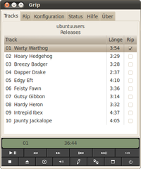
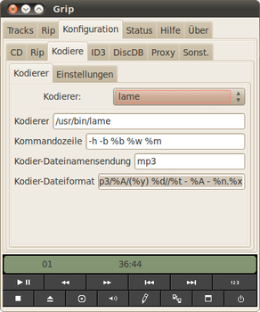

Grip
Dieser Artikel wurde für die folgenden Ubuntu-Versionen getestet:
Ubuntu 16.04 Xenial Xerus
Zum Verständnis dieses Artikels sind folgende Seiten hilfreich:
Grip  ist ein CD-Player und CD-Ripper für den GNOME-Desktop. Eingebaut sind bereits die Funktionen von
ist ein CD-Player und CD-Ripper für den GNOME-Desktop. Eingebaut sind bereits die Funktionen von cdparanoia (cdparanoia extrahiert die Audiodatei von CDs ohne einen analogen Umweg und schreibt sie direkt in eine Rohdatendatei, oder leitet sie weiter in WAV, AIFC, AIFC oder PCM), aber es kann zum Extrahieren der Musikdateien auch jeder beliebige andere Extrahierer verwendet werden.
Grip kann entweder die ganze CD, oder einzelne Stücke der CD in das gewünschte Format bringen. Grip versucht, die Daten aus der angegebenen CD-Datenbank zu beziehen. Die Möglichkeit, direkt Dateinamen oder Tags zu vergeben, besteht ebenfalls. Zur Nachbearbeitung der Tags kann z.B. EasyTAG verwendet werden.
Zum Konvertieren in eine komprimierte Audiodatei kann ebenfalls jeder beliebige Kodierer verwendet werden. Das Programm verfügt bereits über sinnvolle Kodierungs-Voreinstellungen. Zudem kann - wie bei dem Extrahierer auch - mittels Angabe einer Befehlszeile inklusive entsprechender Parameter ein beliebiger anderer Kodierer verwendet werden.
Zusammengefasst kann man sagen, dass Grip durch jeden beliebigen Extrahierer die Audio-Daten einer CD erfassen und mit jedem beliebigen Kodierer in das gewünschte Zielformat bringen kann (vorausgesetzt, der Kodierer/Extrahierer ist für Linux verfügbar und er ist per Befehlszeile steuerbar).
Hinweis:
Die Weiterentwicklung ist - nach langer Pause (die letzte Version war von 2005) - 2016 wieder aufgenommen worden (aktuelle Version 3.4.0 vom 17.04.2017), das Programm ist weiterhin voll verwendbar und aufgrund seiner vielfältigen Konfigurationsmöglichkeiten noch immer "konkurrenzfähig".
Voraussetzungen¶
Je nach gewünschtem Zielaudioformat ist zusätzlich die Installation mindestens einer dieser Encoder nötig:
| gewünschtes Format und benötigtes Paket | ||
| MP3 | OGG | FLAC |
Paketliste zum Kopieren: sudo apt-get install lame
sudo aptitude install lame
|
Paketliste zum Kopieren: sudo apt-get install vorbis-tools
sudo aptitude install vorbis-tools
|
Paketliste zum Kopieren: sudo apt-get install flac
sudo aptitude install flac
|
Man kann auch alle drei auf einmal installieren [1]:
lame (multiverse)
vorbis-tools
flac
 mit apturl
mit apturl
Paketliste zum Kopieren:
sudo apt-get install lame vorbis-tools flac
sudo aptitude install lame vorbis-tools flac
Installation¶
 Das Programm ist nicht mehr in den offiziellen Paketquellen enthalten.
Das Programm ist nicht mehr in den offiziellen Paketquellen enthalten.
Manuell¶
Um das Programm selbst aus dem Quellcode  zu erstellen, werden die folgenden Pakete benötigt:
zu erstellen, werden die folgenden Pakete benötigt:
build-essential
libgnomeui-dev
libvte-dev
libid3-3.8.3-dev
libcurl4-gnutls-dev
mit apturl
Paketliste zum Kopieren:
sudo apt-get install build-essential libgnomeui-dev libvte-dev libid3-3.8.3-dev libcurl4-gnutls-dev
sudo aptitude install build-essential libgnomeui-dev libvte-dev libid3-3.8.3-dev libcurl4-gnutls-dev
Das Quellcode-Archiv entpacken [3] und kompilieren [4]. Ggf. erscheint zwar bei ./configure eine Warn-Meldung zu cdda-paranoia, das Programm funktioniert aber einwandfrei.
Bedienung¶
|  |
| Hauptfenster |
Das Programm ist bei Ubuntu-Varianten mit einen Anwendungsmenü anschließend unter "Unterhaltungsmedien -> Grip" zu finden. Voraussetzung, um die Titel einer CD auszulesen, ist die Installation des passenden Kodierers für .flac, .ogg oder .mp3. Selbstverständlich ist auch eine – kopierschutzfreie – CD nötig, von der man einen Rip anfertigen möchte.
Zuerst legt man die CD ein und startet Grip. Sofern die eingelegte CD in der eingestellten CD-Datenbank vorhanden ist, bekommt man nun nach einer kurzen Ladezeit die entsprechenden CD-Titel angezeigt. Falls nicht, muss man entweder später noch selbst Hand an die Dateien legen oder man schaltet in der Track-Übersicht (Tab "Tracks") in den Bearbeitungsmodus. Der Bearbeitungsmodus ist über den fünften Button in der zweiten Zeile am unteren Fensterrand zu finden und ist mit einem Stift-Symbol versehen. Nun kann man manuell jeden Track mit entsprechenden Informationen versehen.
Mit dem Auswahlfeld am Ende einer jeden Zeile kann man beliebig Musikstücke auswählen, die man gerne rippen möchte. Wählt man nichts aus, wird Grip beim Starten des Rip-Vorgangs nachfragen, ob es die ganze CD rippen soll.
Nun klickt man auf den Reiter "Konfiguration" und den Unter-Reiter "Kodiere". Im Reiter "Kodierer" wählt man nun "oggenc" aus. Die Voreinstellungen können so übernommen werden. Im Reiter "Einstellungen" kann man noch "Lösche .wav-Dateien nach dem Kodieren" aktivieren.
Jetzt auf den Haupt-Reiter "Rip" wechseln, und auf den Button "Rippe und Kodiere" klicken. Wenn zu Anfang keine Musikstücke ausgewählt wurden, fragt Grip jetzt nach, ob es die ganze CD rippen soll. Dort sollte man jetzt "Okay" auswählen, da sonst der Ripvorgang nicht gestartet wird.
Nach einiger Zeit ist der Ripvorgang beendet und die Dateien sind am eingestellten Ort abgespeichert.
Einstellungen¶
 Unter "Konfiguration -> Kodiere -> Einstellungen" kann man für alle Ripper/Kodierer einheitliche Einstellungen festlegen, die dann von Grip für den jeweilig ausgewählten Ripper/Kodierer verwendet werden. Die wichtigsten Einstellungen werden nachfolgend kurz erläutert.
Unter "Konfiguration -> Kodiere -> Einstellungen" kann man für alle Ripper/Kodierer einheitliche Einstellungen festlegen, die dann von Grip für den jeweilig ausgewählten Ripper/Kodierer verwendet werden. Die wichtigsten Einstellungen werden nachfolgend kurz erläutert.
"Bitrate des Kodierers (kbit/s)": Grob gesagt gibt die Bitrate die Qualität einer komprimierten Musikdatei an. Je höher diese Bitrate liegt, desto besser ist die Qualität. Das optimale Verhältnis ist, wenn die Bitrate gleich der Bitrate des Quellmaterials ist. Als guten Kompromiss zwischen Dateigröße und Tonqualität kann man bei Ogg/Vorbis-Kodierten Dateien 128kbit/s, und bei MP3 192kbit/s ansehen.
"Anzahl von CPUs verwenden": Wenn der Computer über mehrere Prozessoren oder einen Prozessor mit mehreren Kernen verfügt, kann man mit dieser Einstellung festlegen, wie viele der CPUs oder Kerne verwendet werden sollen. Möchte man möglichst schnell mit dem Rippen und Kodieren fertig sein, kann man hier bei mehreren CPUs/Kernen die entsprechende Zahl eintragen. Will man hingegen nebenbei noch andere rechenintensive Dinge erledigen, so sollte man hier natürlich nicht die Maximalzahl der verfügbaren CPUs/Kerne angeben.
"Priorität des Kodierers": Gibt an, ob - und wenn ja, in welchem Maße - der Kodier-Prozess vom System bevorzugt behandelt werden soll. Erwartet wird eine Zahl zwischen -20 bis 19, wobei -20 der Wert ist, bei dem das System dem Kodier-Prozess am meisten Rechenzeit zuweist. Eine genauere Erklärung dieses Verhaltens gibt die Wiki-Seite Shell/nice.
Beispielkonfiguration¶
Nachfolgend die Grundkonfiguration des Programms unterteilt nach allgemeinem Teil und kodiererspezifischen Einstellungen.
Allgemeine Einstellungen¶
|  |
| Konfiguration |
"Konfiguration -> Kodiere -> Kodierer"
Kodierer: "/usr/bin/lame"
Kommandozeile "--preset insane %w %m"
Kodier-Dateiformat: "~/mp3/%A//(%y) %d//%t - %A - %n.%x"
"Konfiguration -> Kodiere -> Einstellungen"
Haken vor "Lösche .wav-Dateien nach dem Kodieren" an
Haken vor "Erzeuge .m3u-Dateien" aus
Bitrate des Kodierers (kbit/s): 320
"Konfiguration -> ID3"
Haken vor "Füge ID3v2-Tags zu kodierten Dateien hinzu" an
Haken vor "Tags nur in MP3-Dateien Schreiben" an
ID3v1/ID3v2 Zeichenkodierung: Bei beiden: UTF-8
"Konfiguration -> Disk-DB -> Primärer Server"
Datenbankserver: freedb2.org (freedb.org hat den Service 2006 eingestellt)
CGI-Pfad: ~cddb/cddb.cgi
DB Email-Adresse: dba@tracktype.org
DB-Zeichenkodierung: UTF-8
Haken vor "Nutze FreeDB-Erweiterungen" an
Haken vor "Automatisch CDs nachschlagen" an
"Konfiguration -> Sonst."
Haken vor "Wandele Dateinamen nicht in Kleinbuchstaben um" an
Haken vor Erlaube ‚hohe Bits‘ in Dateinamen" an (Info: Sonst werden Umlaute etc. ersatzlos weggelassen)
Haken vor ""Ändere Leerzeichen nicht in Unterstriche" an
Haken vor "Zeige Benachrichtigungssymbol" an (Info: Damit kann man Grip neben die Uhr minimieren)
Kodierer¶
mp3 mit variabler Bitrate (VBR)¶
"Konfiguration -> Rip -> Ripper"
Ripper: grip (cdparanoia)
Keinen Haken bei "Schalte Paranoia aus"
Haken bei "Schalte Extra-Paranoia aus"
Rip-Datei-Format: ~/%A - %d/%a - %n.temp.wav
"Konfiguration -> Kodiere -> Kodierer"
Kodierer: lame
Kommandozeile:
--preset standard %w %mKodier-Dateinamensendung: mp3
Kodierer-Dateiformat: ~/%A - %d/%a - %n.%x
Die Option --preset standard in der Kommandozeile sorgt für die Kodierung mit variabler Bitrate in hoher Qualität (Zielbitrate 190kbit/s). Alternativen oder weitere Optionen bekommt man gelistet, wenn man sich die Manpage von LAME ansieht.
LAME¶
Folgende Optionen stellt der Befehl lame zur Verfügung:
| lame | ||
| Einstellung | Bitrate | Beschreibung |
| variable Bitrate (VBR) | ||
-V 0...9 | VBR Qualitätseinstellungen | (default=4; beste Qualität=0) |
--preset fast extreme | 220-270 kbit/s | sehr hohe Qualität, entspricht -V 0 --vbr-new |
--preset fast standard | 180-220 kbit/s | hohe Qualität, entspricht -V 2 --vbr-new |
--preset fast medium | 145-185 kbit/s | gute Qualität, entspricht -V 4 --vbr-new |
--preset extreme | 220-270 kbit/s | sehr hohe Qualität, entspricht -V 0 |
--preset standard | 180-220 kbit/s | hohe Qualität, entspricht -V 2 |
--preset medium | 145-185 kbit/s | gute Qualität, entspricht -V 4 |
| durchschnittliche Bitrate (ABR) | ||
--preset <bitrate> | 80-320 kbit/s | Bitraten von 80 kbit/s bis 320 kbit/s (z.B. 96, 128, 160, 192, 256, 320) |
| konstante Bitrate (CBR) | ||
--preset insane | 320 kbit/s | Höchst mögliche Qualität |
-b <bitrate> | 32-320 kbit/s | erlaubte Werte: 32, 40, 48, 56, 64, 80, 96, 112, 128, 160, 192, 224, 256, 320 kbit/s |
Die Angabe fast bei den Presets extreme, standard und medium bzw. die Option --vbr-new in Kombination mit -V 0...9 sorgt dafür, dass ein neuer, schnellerer, Algorithmus zur Berechnung von Dateien mit variabler Bitrate benutzt wird. Ab LAME Version 3.98 ist dieser neue Algorithmus der Standard und wird auch ohne fast bzw. --vbr-new verwendet.
Weitere Einstellungsmöglichkeiten sind der Manpage zu entnehmen.
OGG¶
"Konfiguration -> Rip -> Ripper"
Ripper: grip (cdparanoia)
Keinen Haken bei "Schalte Paranoia aus"
Haken bei "Schalte Extra-Paranoia aus"
Rip-Datei-Format: ~/%A - %d/%a - %n.temp.wav
"Konfiguration -> Kodiere -> Kodierer"
Kodierer: oggenc
Kodierer-Dateiformat: ~/%A - %d/%a - %n.%x
MPC/musepack¶
Benötigt wird das Paket
mppenc (für Version SV7)
musepack-tools (für Version SV8)
mit apturl
Paketliste zum Kopieren:
sudo apt-get install mppenc musepack-tools
sudo aptitude install mppenc musepack-tools
um die Musepack-Dateien erstellen zu können.
Die Ripper-Einstellungen den eigenen Bedürfnissen entsprechend einstellen.
"Konfiguration -> Kodiere -> Kodierer"
"Kodierer.": "other"
Kodiererezeile "/usr/bin/mppenc" (SV7) bzw "usr/bin/mpcenc" (SV8)
Kommandozeile "--xtreme --artist %a --album %d --title %n --track %t --year %y --genre %G %w %m". Möglich sind statt
--xtremeauch--standard(niedrigere Qualität) oder--insane(höchste Qualität)Kodierer-Dateinamensendung "mpc"
Kodiere-Dateiformat "/PFAD/ZUM/MUSIKORDNER/%A/%d/%t - %n.%x", erstellt werden Dateien nach dem Muster 01 - TITEL.mpc im Verzeichnis /.../MUSIKORDNER/KÜNSTLER/ALBUM/
Damit APE-Tags erstellt werden, muss die Option "Füge ID3-Tags zu kodierten Dateien hinzu" im Reiter "Konfiguration -> ID3" deaktiviert werden! Unter Version SV7/mppenc werden Umlaute und Sonderzeichen in den Tags nicht richtig dargestellt, unter SV8/mpcenc ist das Problem gelöst.
Variablen für Dateinamenformate¶
Im Programm kann man an diversen Stellen Dateinamen-Formate angeben. Variablen werden dabei mit einem Prozentzeichen % eingeleitet, und bestehen aus einem großen oder kleinen Buchstaben von A bis Z. Nachfolgend eine alphabetisch sortierte Liste mit den wichtigsten Variablen:
| Formate | |
| Variable | Beschreibung |
%b | Die Bitrate, die unter "Konfiguration -> Kodiere -> Einstellungen" eingestellt wurde. |
%q | Hierbei kann auf die %b verzichtet werden und der Kodierer arbeitet mit einer variablen Bitrate. Deren Spektrum kann man mit Werten zwischen -1 und 10 festlegen. Gut ist 6-7. |
%c | Das verwendete Laufwerk, einstellbar unter "Konfiguration -> CD" bei "CD-ROM-Laufwerk" |
%t | Die Track-Nummer des aktuell bearbeiteten Musikstücks |
%n | Der Name des aktuell bearbeiteten Musikstücks |
%d | Der Titel des Albums |
%a | Der Interpret des aktuell bearbeiteten Musikstücks |
%x | Die Dateiendung, welche den gerippten Musikstücken angehängt werden soll, einstellbar unter "Konfiguration -> Kodiere -> Kodierer" |
Bekannte Probleme¶
Manchmal stürzt Grip zwischen dem Auslesen und der Kodierung eines Tracks ab. Viele dieser Abstürze korrelieren offensichtlich mit der Verwendung von ID3v2-Tags. Ob das Problem nun an falsch kodierten Tags in den (Internet-)Datenbanken oder an den internen Implementierung Grips liegt, ist unklar.
Umgehen lässt es sich durch das Abschalten der ID3v2-Tag-Unterstützung unter "Konfiguration -> ID3 -> Füge ID3v2-Tags zu kodierten Dateien hinzu".
Keine Audio-Wiedergabe¶
Grip kann die Musikstücke der eingelegten CD auch wiedergeben. Allerdings funktioniert das rein "analog", d.h. es muss eine direkte Kabelverbindung zwischen dem CD-Laufwerk und der Soundkarte bestehen.
configure-Probleme beim Kompilieren¶
In Version 3.3.1 stoppt configure beim Testen, ob die installierte id3lib-Version korrekt ist, mit der Ausgabe checking for id3lib version... ./configure: line 11278: .: conftest.id3: file not found. Umgehen lässt sich das durch eine Änderungen in der Datei configure in einem Editor[5]. Zeile 11278 muss von
. conftest.id3
abgeändert werden zu
. ./conftest.id3
Quelle: Grip-SourceForge-Seite patch 152 , siehe auch im Forum.
Links¶
Projektseite
auf SourceForge.netAusführliche, bebilderte Anleitung zum Rippen
 - Forumsbeitrag, 11/2004
- Forumsbeitrag, 11/2004CDs rippen
 Übersichtsartikel
Übersichtsartikel
- Erstellt mit Inyoka
-
 2004 – 2017 ubuntuusers.de • Einige Rechte vorbehalten
2004 – 2017 ubuntuusers.de • Einige Rechte vorbehalten
Lizenz • Kontakt • Datenschutz • Impressum • Serverstatus -
Serverhousing gespendet von